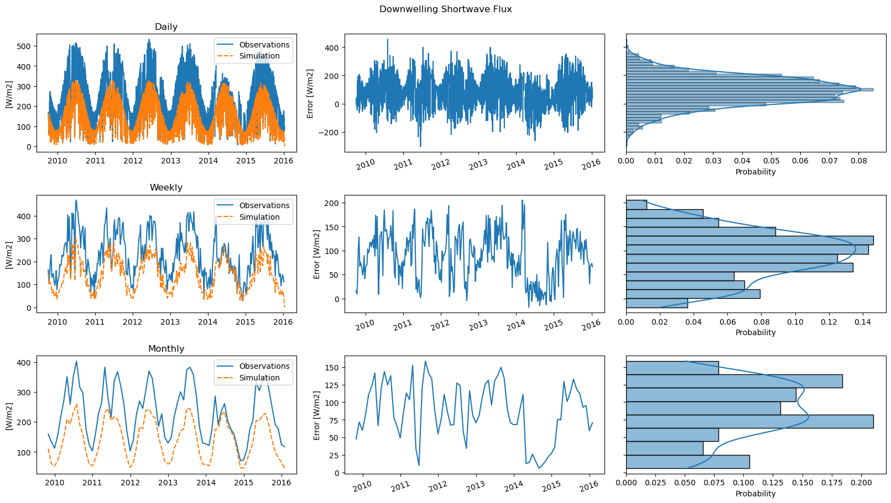
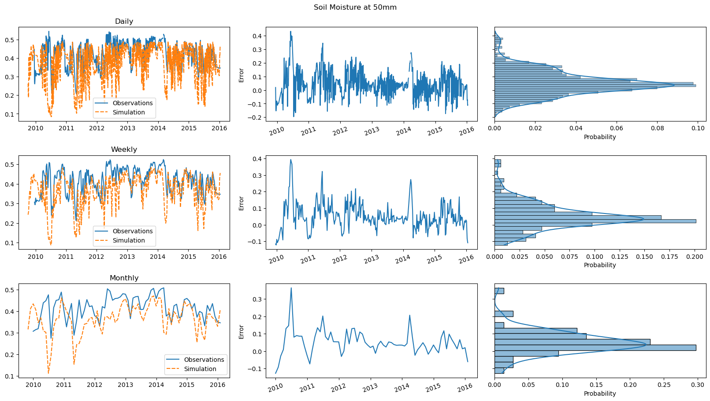
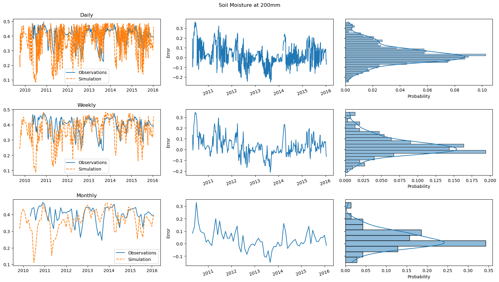
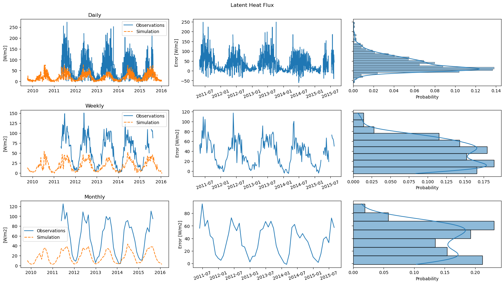
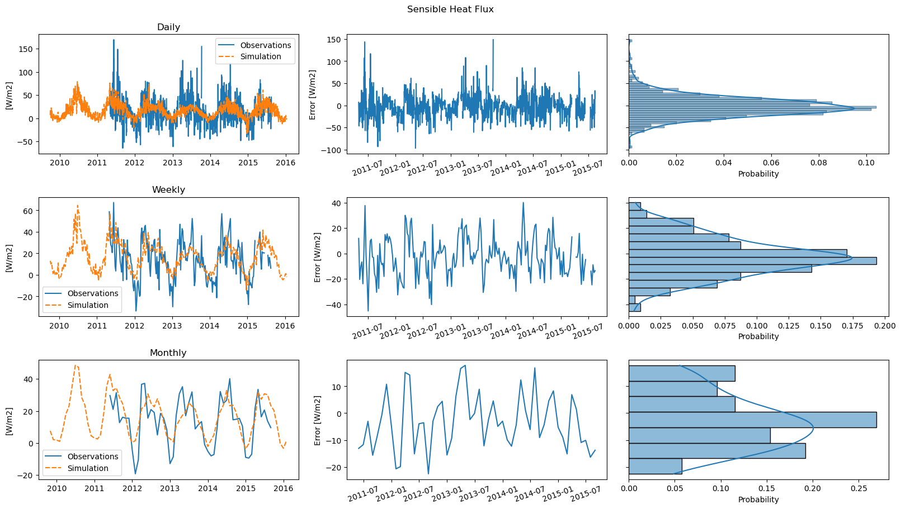
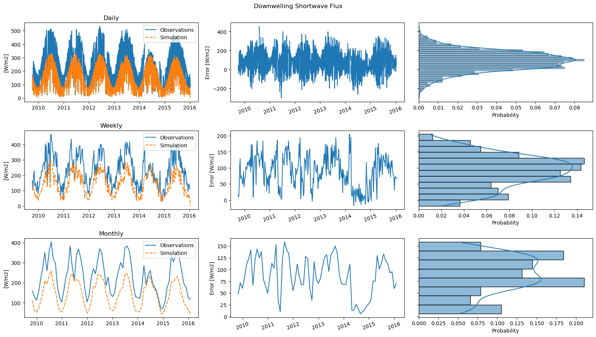
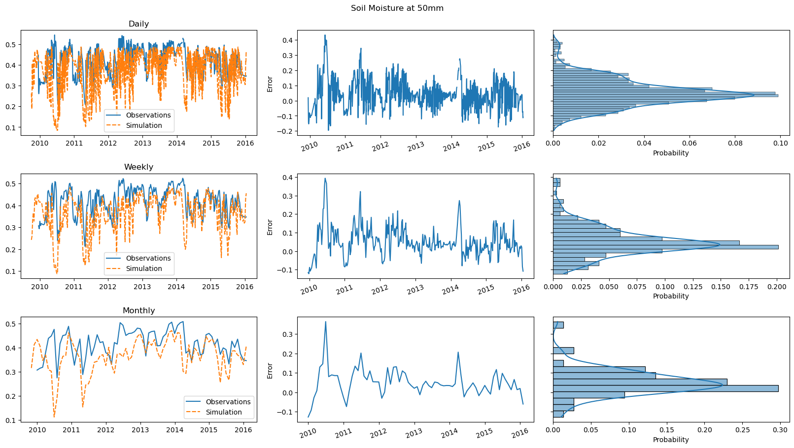
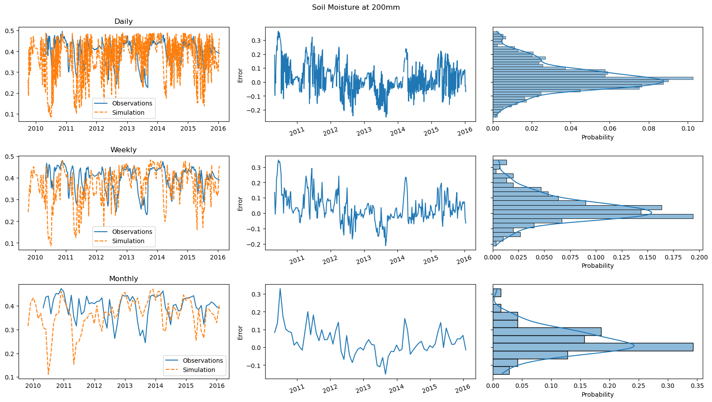
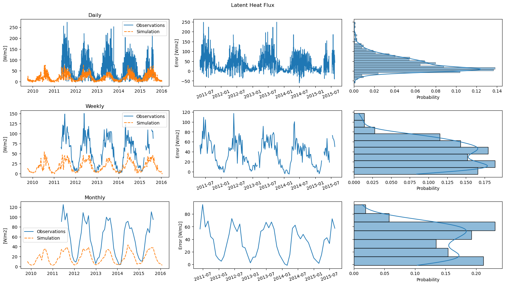
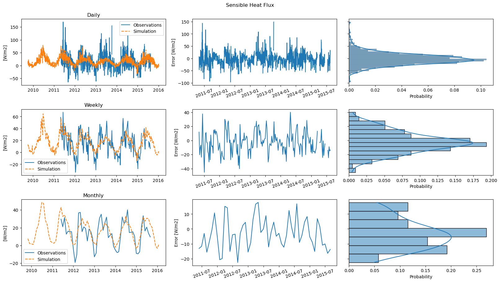

Experiments in Global Optimization: GEOtop Calibration¶
Stefano Campanella
Supervisors: Giacomo Bertoldi, Alberto Sartori
1. Foreword¶
In this brief thesis, I will discuss my final project for the 2019/20 edition of the Master in High-Performance Computing held by SISSA and ICTP.
The topic of this project is the exploitation of HPC for finding the best optimization strategy for the calibration of the GEOtop hydrological model and finally performing a calibration on a case study of hydrological relevance. It must be noted that the experimental procedure developed in this project could be applied in principle to any statistical or physical model, even outside environmental sciences. However, the focus of this project will be on GEOtop, in accord with statement of the fellowship sponsoring this work: “development of a High-Performance hydological model”.
Being in its essence a report of experimental research, although of the kind of experiments which are done on a computer, its structure will resemble the customary one for such documents:
Introduction. Here I give some key concepts to make the reader without a background on the subject acquainted with the topics of hydrology, hydrological modeling, and the GEOtop model.
Motivations. In this part, I discuss the problem of calibrating an environmental model, and more specifically GEOtop. I also present the analogies with hyperparameter optimization in Machine Learning and the need for High-Performance Computing. I will try to answer both questions “why is HPC needed for this research?” And “how is this research relevant for HPC?”
Problem. In this part, I give a formal statement of the problem, in mathematical terms but without mathematical rigor.
Approach and procedure. Where I discuss the implementation details and motivate them. Here I also try to explain how to reproduce my research and adapt it to your case study.
Results and conclusions. Where I present the results of the numerical experiments and discuss them, both from the hydrological and the HPC viewpoint.
This simple premise must be followed by some further considerations.
The first one is that the interest in this project is faceted. Indeed, It could be considered interesting both technically (or technologically) and scientificly. Within its scientific interest one could account for both its applied hydrological value and theoretical optimization one. This diversity is not a merit of this particular work or of its author, but its specific of enabling technologies, in this case High-Performance Computing resources, and their use in applied science.
The second consideration regards the purpose of this document, as I would like it to be a documentation for the code with which is bundled. Indeed, in many research fields, articles, reviews and records of conferences account only for a part of the writing duty of the researchers, the other being computer programs, something for which they are not always given the right credit. However, if programming is really theory building (cite Naur), then we need to consider code as literature and write correct, clear, reusable and extensively documented code to make real scientific progress and not waste our collective efforts.
However, the issue is not just the consideration we have for programming as a research activity. If one wants to apply the scientific method to numerical experiments, he has to attain to the same standards used for the experiments done in laboratories. In other words, these must be reproducible. Therefore, the purpose of this document is to enable the reader to reproduce the results obtained and to extend them to his own case study. Also, although briefly, some general aspects of the choices made in the writing and deployment of the code will be discussed; such that this document could be useful also for similar research.
One last consideration is needed. Given the diversity of topics involved, the vastity of material, the time assigned to this project and its focus on HPC, and finally the background of the author, it was necessary to use some tools (algorithms, concepts, etc.) without fully mastering them. This unavoidable fact is reflected in the frugality of the bibliography and in their presentation, which occasionally could be sloppy or contain plain errors. It goes without saying that the responsability for those is mine and mine only. However, my hope is that the material presented here, if not the subject for deeper and broader research by the author, will be at least a prompt for more expert readers.
A few more words on this last point. The growth of complexity in science, to which specialism was the universal response, is not going to decline; but maybe the compartmentalization of specialism will. When we will seek for systematic answers to the problems posed by this Cambrian explosion, one place to look will be Computer Science, which under many regards is the art of managing complexity by the human mind through abstractions. The simplest and most ubiquitous abstraction is the black box, and hence there is no shame in using black boxes when dealing with problems outside of our competence. However, in order to make scientific statements on them, neglecting the implementation details, one needs the strictest rigor on the assumptions, that is on their inputs and outputs.
This was the spirit of the thesis I would have liked to write, I fear unfortunately without success.
In my opinion, this is also the reason why there is little chance to see the rise of scientific programmers, but I am sure that good scientists will be also good programmers, i.e. will be able to express elegantly their thougths both in declarative form by means of equations and in procedural form, with the help of a computer.
1. Brief Introduction to Hydrology¶
2. Brief Introduction to Hydrological Modeling¶
3. Brief Introduction to GEOtop¶
1. Formal Statement¶
1. Tools¶
2. Deployment¶
3. Libraries used¶
4. Examples¶
import pandas as pd
import matplotlib.pyplot as plt
from IPython.display import display, Markdown
from mhpc_project.matsch_b2 import FullModel
from geotopy.utils import date_parser, comparison_plot
targets = [
('rainfall_amount', 'mm', 'Rainfall Amount'),
('wind_speed', 'm/s', 'Wind Speed'),
('relative_humidity', None, 'Relative Humidity'),
('air_temperature', 'C', 'Air Temperature'),
('surface_downwelling_shortwave_flux', 'W/m2', 'Downwelling Shortwave Flux'),
('soil_moisture_content_50', None, 'Soil Moisture at 50mm'),
('soil_moisture_content_200', None, 'Soil Moisture at 200mm'),
('latent_heat_flux_in_air', 'W/m2', 'Latent Heat Flux'),
('sensible_heat_flux_in_air', 'W/m2', 'Sensible Heat Flux')
]
observations = pd.read_csv('../data/Matsch B2/obs.csv',
na_values=['-9999', '-99.99'],
parse_dates=[0],
date_parser=date_parser,
index_col=0)
observations.index.rename('datetime', inplace=True)
model = FullModel('../data/Matsch B2/geotop')
simulation = model()
for name, unit, desc in targets:
display(Markdown(f"# {desc}"))
comparison_plot(observations[name],
simulation[name],
desc=desc,
unit=unit)
plt.show()
 









# Defaults
n = 512
cores = 256
import numpy as np
import pandas as pd
from dask.distributed import Client
from dask_jobqueue import SLURMCluster as Cluster
from SALib.sample import latin
from SALib.analyze import delta as delta_mim
from joblib import Parallel, delayed, parallel_backend
from mhpc_project.matsch_b2 import Variables, CalibrationModel
from geotopy.optim import Loss
from geotopy.measures import KGE
from geotopy.utils import date_parser
cluster = Cluster()
cluster.scale(cores=cores)
client = Client(cluster)
observations = pd.read_csv('../data/Matsch B2/obs.csv',
na_values=['-9999', '-99.99'],
usecols=[0, 7],
parse_dates=[0],
date_parser=date_parser,
index_col=0,
squeeze=True)
observations.index.rename('datetime', inplace=True)
model = CalibrationModel('../data/Matsch B2/geotop', run_args={'timeout': 120})
variables = Variables('../data/Matsch B2/variables.csv')
measure = KGE(observations)
loss = Loss(model, variables, measure)
problem = {'num_vars': variables.num_vars,
'names': variables.names,
'bounds': variables.bounds}
samples = latin.sample(problem, n)
with parallel_backend('dask', client=client):
losses = Parallel(verbose=10)(delayed(loss)(x) for x in samples)
losses = np.array(losses)
indices = np.isfinite(losses)
good_samples = samples[indices]
good_losses = losses[indices]
SA = delta_mim.analyze(problem, good_samples, good_losses)
SA.sort_values('S1', key=np.abs, ascending=False)
import pandas as pd
import matplotlib.pyplot as plt
from dask.distributed import Client
from dask_jobqueue import SLURMCluster
import nevergrad as ng
from mhpc_project.matsch_b2 import CalibrationModel, Variables, Loss, Calibration
from geotopy.utils import date_parser, comparison_plot, DataFrameLogger
from geotopy.measures import KGE
settings = {
'parametrization': {
'mutable_sigma': True,
'init_sigma': 0.1,
'lower': 0.0,
'upper': 1.0,
},
'optimizer': {
'budget': 4096,
'num_workers': 256
}
}
cluster = SLURMCluster()
cluster.scale(cores=settings['optimizer']['num_workers'])
client = Client(cluster)
observations = pd.read_csv('../data/Matsch B2/obs.csv',
na_values=['-9999', '-99.99'],
usecols=[0, 7],
parse_dates=[0],
date_parser=date_parser,
index_col=0,
squeeze=True)
observations.index.rename('datetime', inplace=True)
model = CalibrationModel('../data/Matsch B2/geotop', run_args={'timeout': 120})
variables = Variables('../data/Matsch B2/variables.csv')
measure = KGE(observations)
loss = Loss(model, variables, measure)
calibration = Calibration(loss, settings)
simulation = model()
print(f"Before optimization loss is {measure(simulation)}")
comparison_plot(observations,
simulation,
desc='Soil moisture content @ 5cm')
plt.show()
calibration.optimizer.register_callback('tell', ng.callbacks.ProgressBar())
logger = DataFrameLogger(variables)
calibration.optimizer.register_callback('tell', logger)
loss, settings = calibration()
experiment = logger.experiment
experiment.display()
simulation = model(**settings)
print(f"After optimization loss is {loss}")
comparison_plot(observations,
simulation,
desc='Soil moisture content @ 5cm')
plt.show()